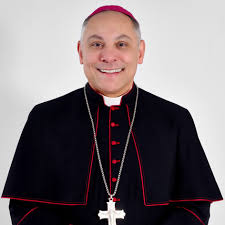

História da Igreja Católica :
A Igreja Católica, também denominada Igreja Católica Romana ou ainda Igreja Católica Apostólica Romana, é a maior igreja cristã do mundo, que em 2020 tinha aproximadamente 1,36 bilhão de seguidores batizados.Como a maior e mais antiga instituição internacional do mundo em funcionamento contínuo, ela desempenhou um papel proeminente na história e no desenvolvimento da civilização ocidental.A Igreja é chefiada pelo bispo de Roma, conhecido como Papa. Sua administração central é a Santa Sé.
As crenças cristãs do catolicismo são baseadas no Credo Niceno. A Igreja Católica ensina que é a Igreja única, santa, católica e apostólica fundada por Jesus Cristo em sua Grande Comissão,que seus bispos são os sucessores dos apóstolos de Cristo e que o papa é o sucessor de São Pedro, a quem o primado foi conferido por Jesus.
Além de sua importância numérica e histórica, a Igreja Católica desempenhou um papel significativo em áreas como a filosofia, a arte, a educação e a caridade ao longo dos séculos. Suas contribuições para a cultura ocidental são inegáveis.
No campo da filosofia, pensadores como Santo Agostinho e São Tomás de Aquino moldaram o pensamento ocidental com suas obras. A teologia católica influenciou profundamente o desenvolvimento da filosofia moral e política, fornecendo uma base ética para a sociedade.
Na arte, a Igreja Católica foi uma grande patrona das artes, especialmente durante o Renascimento, quando artistas como Michelangelo, Leonardo da Vinci e Rafael produziram algumas das obras mais famosas da história da arte sob o patrocínio papal e eclesiástico.
A educação também foi um campo em que a Igreja desempenhou um papel central. Durante a Idade Média, as escolas monásticas e as universidades eclesiásticas foram fundamentais para a preservação e transmissão do conhecimento, enquanto hoje a Igreja mantém milhares de escolas e universidades em todo o mundo.
Além disso, a Igreja Católica é conhecida por seu compromisso com a caridade e a assistência aos necessitados. Desde os primórdios do cristianismo, a prática da caridade tem sido uma parte central da vida da Igreja, através de instituições como hospitais, orfanatos, asilos e programas de ajuda humanitária.
Em termos de influência política e social, a Igreja Católica desempenhou papéis variados ao longo da história, desde o estabelecimento de estados cristãos na Europa medieval até sua atuação em questões contemporâneas como a defesa dos direitos humanos e a promoção da paz mundial.
Apesar de enfrentar desafios e críticas ao longo dos anos, a Igreja Católica continua sendo uma das instituições mais poderosas e influentes do mundo, exercendo sua autoridade espiritual, moral e cultural em uma ampla gama de áreas.
Hierarquia da Igreja Católica

Papa - Francisco I
O Papa é o líder espiritual máximo da Igreja Católica, uma figura que transcende fronteiras religiosas e exerce influência global. Suas funções são vastas e profundamente significativas para milhões de pessoas em todo o mundo.
Como sucessor de São Pedro, o Papa é o guardião da doutrina da fé católica e o principal intérprete dos ensinamentos de Jesus Cristo. Ele oferece orientação espiritual aos fiéis e exorta-os a viver de acordo com os princípios do Evangelho.
Além de suas responsabilidades espirituais, o Papa também é o chefe de Estado do Vaticano, o menor país do mundo, o que confere a ele um papel diplomático importante na cena internacional. Ele se envolve em questões globais, promovendo a paz, a justiça social e os direitos humanos.
Como líder da Igreja Católica, o Papa governa com autoridade suprema, nomeando bispos, estabelecendo políticas e direcionando o funcionamento da instituição em todo o mundo.
O Papa também é um símbolo de unidade para os católicos, representando a conexão entre os fiéis e Deus, bem como entre os cristãos e a tradição apostólica.
Ao longo dos séculos, o Papado tem sido uma instituição poderosa e influente, moldando a história e a cultura de muitas nações. Embora seja uma figura central para os católicos, o Papa também é respeitado e reconhecido por pessoas de diferentes religiões e crenças, como um líder espiritual e moral de destaque.

Cardeais Italianos
Os cardeais são membros proeminentes da hierarquia da Igreja Católica, responsáveis por aconselhar o Papa e participar de importantes decisões e rituais da Igreja. Esses líderes religiosos são selecionados pelo próprio Papa devido à sua experiência, sabedoria e serviço dedicado à fé católica.
Uma das funções mais notáveis dos cardeais é participar do Conclave, a reunião onde um novo Papa é eleito. Durante esse processo, eles se reúnem na Capela Sistina e, através de votações secretas, escolhem o próximo líder espiritual da Igreja Católica.
Além disso, os cardeais são conselheiros papais, ajudando o Papa a tomar decisões importantes sobre questões teológicas, pastorais e administrativas da Igreja. Sua experiência e conhecimento os tornam valiosos aliados na orientação espiritual e no governo da Igreja.
Cada cardeal tem sua própria diocese ou responsabilidade eclesiástica, e muitos desempenham um papel ativo em suas comunidades locais, liderando paróquias, instituições de caridade e promovendo a evangelização.
No entanto, é importante notar que nem todos os cardeais são arcebispos ou bispos; alguns são escolhidos entre o clero secular ou até mesmo entre os leigos que prestaram serviços notáveis à Igreja. Independentemente de sua origem, todos os cardeais compartilham o compromisso de servir a Deus e à Igreja Católica.

Arcebispo - Gregório P.
Os arcebispos são figuras de destaque na estrutura eclesiástica da Igreja Católica. Responsáveis por liderar arquidioceses, regiões eclesiásticas de maior importância, eles desempenham um papel fundamental na condução da fé católica e na orientação espiritual de seus fiéis.
Comumente chamados de "metropolitas", os arcebispos são encarregados de uma série de responsabilidades dentro de suas jurisdições. Eles supervisionam um grande número de paróquias, clérigos e fiéis, assegurando que a doutrina católica seja ensinada e seguida adequadamente.
Além disso, os arcebispos têm o poder de consagrar bispos, promover clérigos e tomar decisões pastorais importantes para suas arquidioceses. Sua liderança é vital para manter a coesão e a integridade da fé católica em sua região.
Os arcebispos também desempenham um papel ativo nas conferências episcopais, onde colaboram com outros líderes da Igreja em questões de interesse nacional e internacional. Suas vozes são ouvidas em discussões sobre moralidade, justiça social e outras questões contemporâneas que afetam a comunidade católica e a sociedade em geral.
Em resumo, os arcebispos são pilares da fé católica, guiando e nutrindo suas arquidioceses com sabedoria, compaixão e compromisso com os ensinamentos de Jesus Cristo.
Padre - Pe.Edvando
Os padres, como ministros ordenados da Igreja Católica, têm o privilégio e a responsabilidade de servir a Deus e à comunidade de fiéis de maneira única e especial. Como representantes de Cristo na terra, eles desempenham uma variedade de funções que são fundamentais para a vida da igreja e para o bem-estar espiritual de seus paroquianos.
Em primeiro lugar, os padres são responsáveis por presidir os sacramentos da Igreja, em particular a Eucaristia, onde celebram a presença de Cristo no pão e no vinho. Eles também administram os sacramentos da Reconciliação (Confissão), Batismo, Confirmação, Matrimônio e Unção dos Enfermos, proporcionando aos fiéis os meios para crescer em sua fé e buscar a graça de Deus.
Além disso, os padres desempenham um papel crucial na educação religiosa, ensinando os ensinamentos da Igreja e transmitindo a fé católica às crianças, jovens e adultos através da catequese, homilias e palestras. Eles são chamados a oferecer orientação espiritual e aconselhamento pastoral aos membros de sua comunidade, ajudando-os em momentos de dificuldade, dúvida ou crise.
Os padres também têm a importante responsabilidade de liderar e cuidar das necessidades espirituais e materiais de suas paróquias. Eles coordenam as atividades pastorais, organizam eventos comunitários, visitam os doentes e idosos, e estão disponíveis para prestar assistência espiritual e conforto sempre que necessário.
Além disso, os padres são chamados a ser testemunhas vivas do amor de Deus em suas vidas, modelando virtudes cristãs como humildade, compaixão, perdão e serviço desinteressado aos outros. Eles são chamados a viver uma vida de santidade, exemplificando o que pregam e inspirando outros a seguirem o caminho de Cristo.
Em resumo, os padres desempenham um papel vital na vida da Igreja Católica e na vida espiritual de seus fiéis, guiando, ensinando e nutrindo a comunidade em sua jornada de fé e crescimento espiritual. Sua dedicação e serviço são uma bênção para todos aqueles que buscam uma vida de comunhão com Deus e com os outros.

Diácono - Júnior (2020)
Os diáconos são uma parte essencial da estrutura da Igreja Católica, chamados a um ministério de serviço e caridade em nome de Cristo e da comunidade. Como ministros ordenados, eles têm o privilégio de exercer uma variedade de funções que visam a edificação da Igreja e o bem-estar dos fiéis.
A principal função do diácono é a de serviço. Inspirados pelo exemplo de Jesus, que veio para servir, os diáconos dedicam-se ao serviço dos mais necessitados, dos pobres, dos doentes e dos marginalizados. Eles visitam os doentes, confortam os aflitos, distribuem alimentos aos famintos e procuram atender às necessidades espirituais e materiais daqueles que estão em dificuldade.
Além disso, os diáconos têm um papel importante durante a liturgia. Eles podem proclamar o Evangelho, pregar sermões, ajudar na celebração da Eucaristia e administrar outros sacramentos, como o Batismo e o Matrimônio. Sua presença na liturgia é uma lembrança tangível do chamado de Cristo para servir e cuidar uns dos outros.
Os diáconos também são chamados a serem testemunhas do Evangelho em suas vidas cotidianas. Eles são encorajados a viver de acordo com os ensinamentos de Jesus, modelando a humildade, a compaixão, a generosidade e o amor ao próximo. Sua vida de serviço e dedicação inspira outros a se aproximarem de Deus e a viver uma vida de fé ativa.
Embora os diáconos não tenham a mesma autoridade pastoral dos sacerdotes, eles são uma presença valiosa na vida da comunidade cristã, oferecendo uma variedade de ministérios que complementam e enriquecem o trabalho dos padres e dos leigos. Sua vocação é uma expressão tangível do chamado de Deus para todos os cristãos: servir aos outros com amor e compaixão.
Em resumo, os diáconos são servos dedicados de Cristo e da Igreja, comprometidos em servir aos outros com humildade e amor. Sua presença e ministério são um lembrete poderoso do chamado de todos os cristãos para serem testemunhas do Evangelho no mundo.
Jovem Católico